本期是汇率系列的第三讲，分上下两个半场。上半场接着第九课，把离岸人民币（CNH）的发行、使用与循环 讲透：它为什么存在、靠哪六条渠道"转化"出来、又是怎么回流境内的，以及和美元循环的本质差别。 下半场是"看图说话"，用2000—2025年整整25年的数据，以美元指数为锚，逐一复盘瑞郎、欧元、在岸人民币、 加元、澳元、瑞典克朗、英镑、日元、印度卢比九种主要货币的真实强弱——很多结论和市场直觉完全相反。
00:00 - 35:16 · 第1~19页PPT
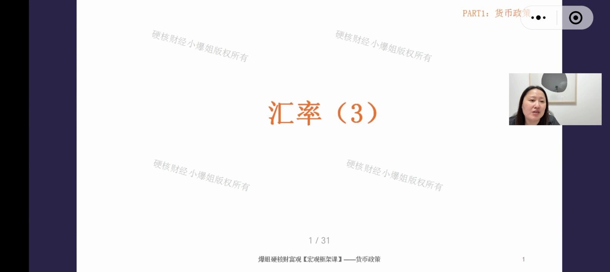
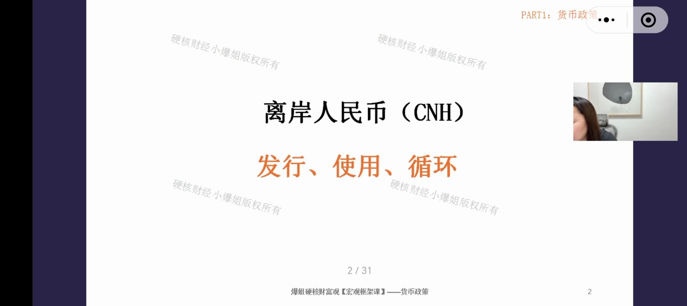
今天讲的是汇率课程的第三部分，分两大块：第一，接着上次课深入讲离岸人民币的发行、使用和循环；第二，看图说话，一起看各国汇率的强弱——爆姐预告"看完很多人会大跌眼镜，很多地方和大家想象的不一样"。
下一次课就是汇率系列的最后一节，主要讲汇率对各类资产的影响，以及汇率里常用的几个衍生品工具。届时整个汇率部分就全部讲完了。
本节课开场不多寒暄，直接进入主题：上次课讲了离岸人民币的概念、在岸与离岸的"量子纠缠"，今天细致讲它到底是怎么发行、怎么使用、怎么循环的。
本节定位：第一部分承接第九课，把离岸人民币的完整"生命周期"讲清楚；第二部分用25年数据做全球货币强弱排名，是本课的核心干货。
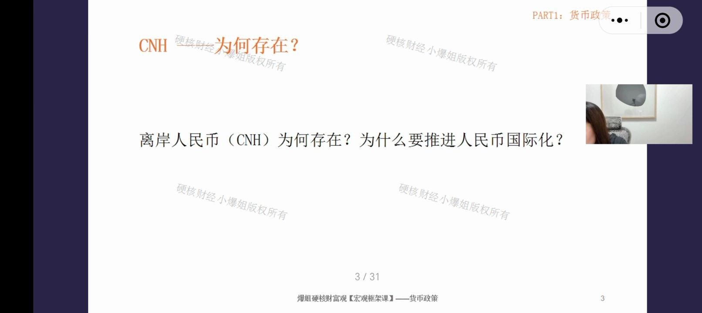
网上关于人民币国际化的说法五花八门、博人眼球，但从官方口径和后续实操看：人民币国际化的目的，并不是为了成为另一个"美元霸权"，而是为了解决我们在使用美元过程中的一些痛点，促进自身贸易和投资的便利性。
先立一个正确的认知：国家做任何计划和安排，一定是基于理性的需要，而不是网上说的"阴谋论、霸权论、反击战"这类情绪化说法。人民币全球化更多是为了贸易本身的便利性去解决问题，而不是"要替换美元"——现在就讲取代逻辑为时尚早。
那么，使用美元到底有哪些痛点？这就引出下一节的四大痛点总览。
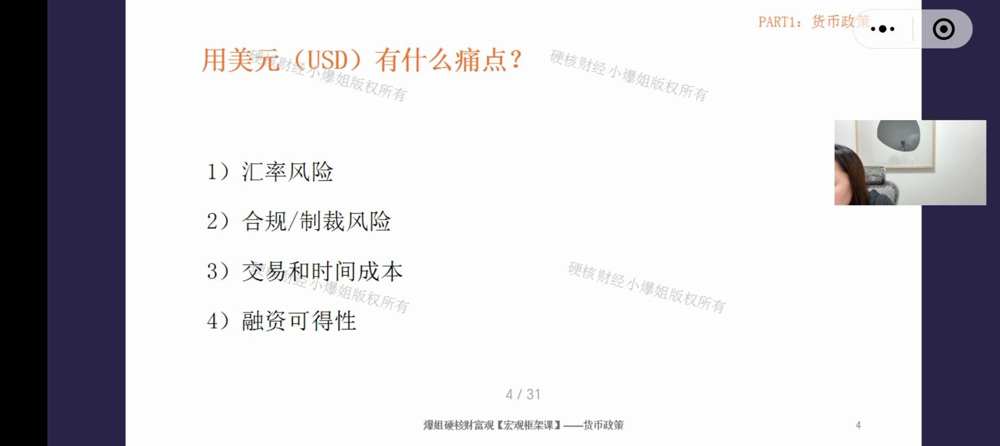
在外贸环境中，使用美元主要有四个痛点：
记忆框架：四个痛点可以概括为——汇率的怕、合规的卡、交易的慢贵、融资的难。下面逐一展开。
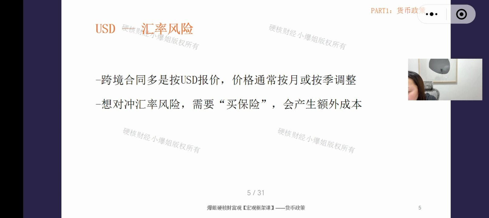
实操中，很多跨境合同都是按美元报价的，价格通常按月或按季度调整。这会产生一个很现实的问题：
结论：只要用美元，就必然承担汇率风险，要么被动承受波动，要么花钱买对冲——两条路都有成本。
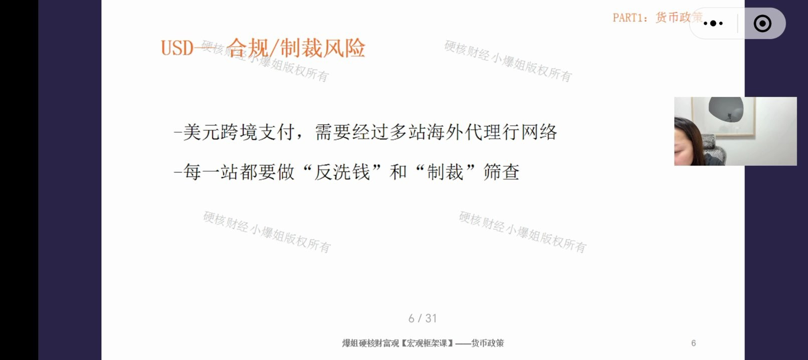
做美元跨境支付，要经过海外的代理网络才能完成。链路一长，每个站点都会做反洗钱和制裁筛查：
一句话：跨境用美元的合规成本很高，这是实实在在的风险敞口。
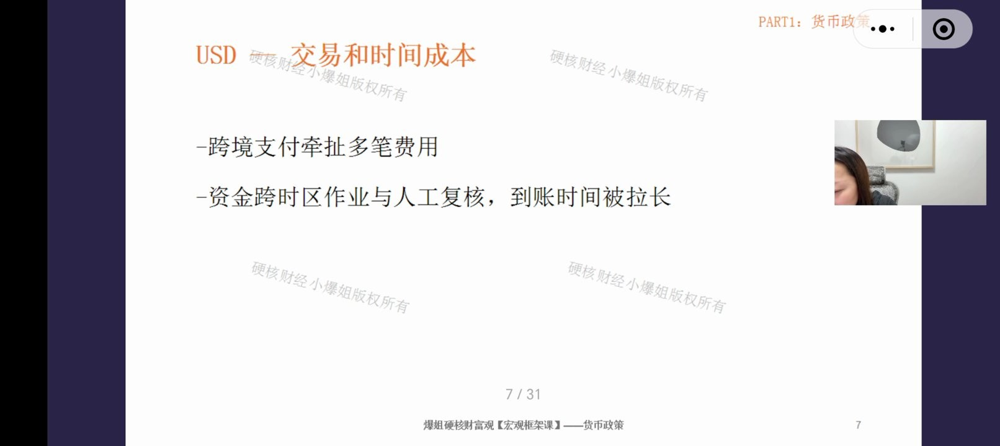
跨境用美元支付一笔款项，常见收费包括：发起行收费、收款行费用、代理行处理费、汇率点差等，而且这些费用很难事前精算到小数点。
总结一句话：用美元跨境支付，"又慢又贵"。
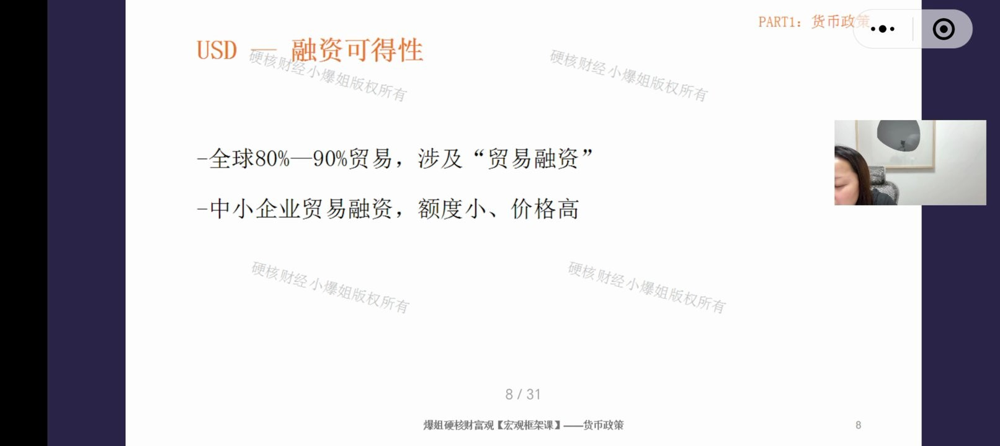
什么是融资可得性？字面意思：融资能不能拿到、容不容易拿到。先看一个数据：
全球 80%~90% 的贸易都会涉及贸易融资（含贸易信贷、保险、担保等），而且以短期为主。如果大家都百分百用自己的钱，交易量和活跃度会大幅下降。
跨境贸易中双方最大的问题是信任和现金流：买家担心付了钱收不到货，卖家担心发了货收不到钱。通过信用证，等于把买方的信用替换成银行的承诺——卖家交齐货、拿单据到银行就能拿到钱；再用保理、票据贴现，把应收账款或远期票据变成现金，解决账期太长的问题。
但这些融资方式对中小企业并不友好：审批慢、额度小、价格高——这是融资可得性的风险。
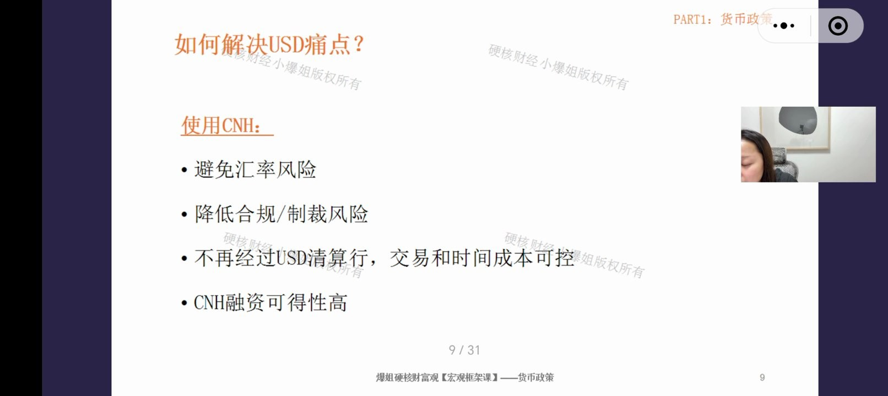
前面说了一大堆美元的风险，怎么解决？答案就是今天的主角：如果双方都用离岸人民币，很多问题迎刃而解。
呼应本课开篇：我们发离岸人民币，是为了解决外贸过程中的实际问题，服务贸易、服务实体，不是要搞什么货币霸权。
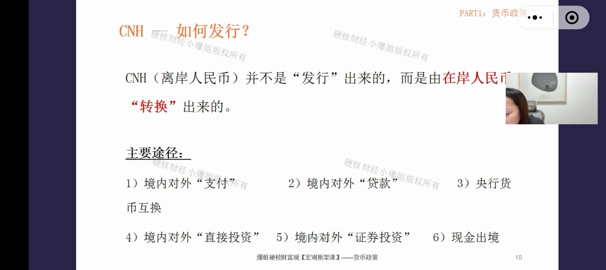
关键点来了：离岸人民币和在岸人民币不一样，它不是"发行"出来的，而是由在岸人民币"转化"出来的。
回顾在岸人民币的发行：外汇占款、金融机构再贷款、央行买国债三种方式（前面课程讲过很多次）。而离岸人民币不是央行直接发行，是通过以下六种方式从在岸转化到境外：
核心区别：在岸人民币是"发出来的"，离岸人民币是"转出去的"——由在岸人民币通过上述场景转换到境外。这个区别是整个汇率框架的关键。
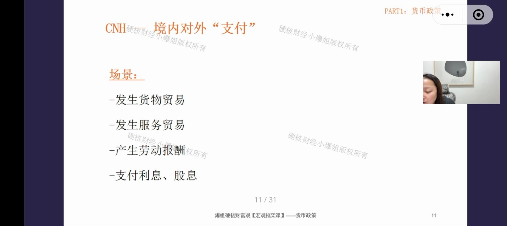
"境内对外支付"既包括国家对海外支付、企业对海外支付、个人对海外支付。主要有四个场景：
通过这四类场景，在岸人民币就被转化成了离岸人民币。
延伸问题：假设一个境外企业同意用离岸人民币买中国货物/服务，但它手里没有人民币，怎么办？——这正是下一节要讲的。
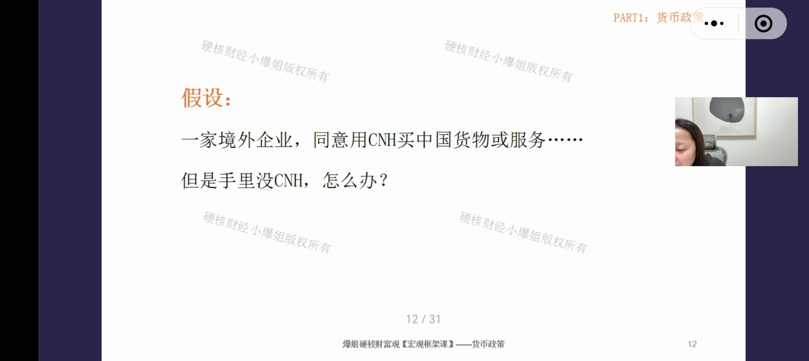
境外企业手里没有离岸人民币，又愿意用人民币采购中国货物或服务，它有三个选择：
一句话理解：你自己能搞定就自己借；搞不定找你的银行；银行也搞不定，就由你的央行出面跟我们的央行借——层层递进，总能拿到人民币。
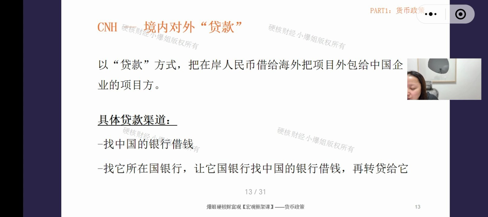
"境内对外贷款"和"支付"要区分开：贷款是借钱给别人，不是支付。一般是借给这样的海外一方——海外有项目、且项目承包给了中国企业（建港口、修铁路、搞基建、开矿等）。
海外要建一个港口但没钱。中国的操作方式：我借给你钱，前提是你必须把港口包给中国企业建设；等港口建好开始运营，你用赚的钱还贷款。
对方没钱要借钱，我们借给它去采矿；矿采出来后，中国用人民币买矿石，对方收到人民币后再用人民币还贷。转一圈，人民币出去了又回来了，"等于没花钱"，但把矿石拿回来了——技巧非常多。
本质发现：人民币循环的回流，本质是把自己借出去的钱收回来；而美元循环的回流本质是借钱（各国拿外汇储备买美债=把钱借给美国）。这个本质差别后面讲循环时会再展开。
贷款的具体渠道与支付一样：直接找中国银行借，或找所在国银行、再由所在国银行找中国银行转贷。
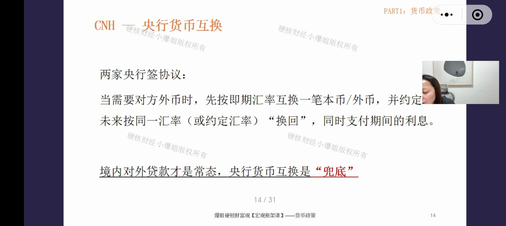
第九课讲到央行与香港金管局之间有8000亿元的互换额度，逻辑是一样的。央行的货币互换是什么意思？
定义：两家央行共同签署协议，约定当对方需要外币时，可按即期汇率（现在的汇率）用本币换出一笔外币；到期后，对方再用等量的外币把本币换回来。借用期间要正常支付利息。
中国与阿根廷签了货币互换协议。某天阿根廷要用人民币，就把手里的比索押给我们，按现行汇率换出一笔人民币；到期后还回等量人民币、换回比索，并支付使用期间的利息。
主要两类对象：一是人民币离岸中心（一主两副：香港为主，新加坡、伦敦为副，便于极端情况提供流动性）；二是关系较好的贸易伙伴（如阿根廷、巴西等）——前提是对方同意接收人民币。
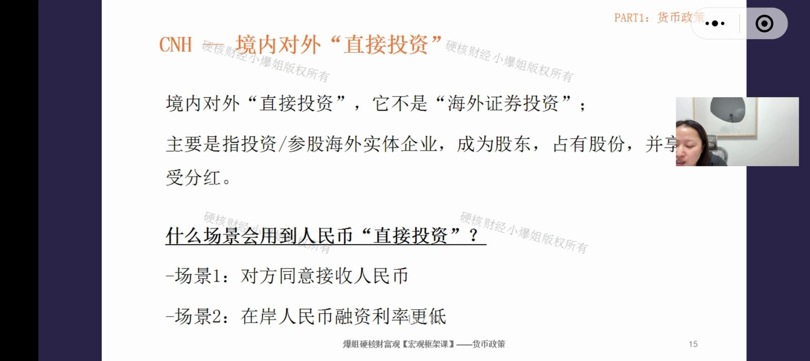
特别注意：这里说的是直接投资，不是证券投资。直接投资的意思是直接投资海外实体企业、占股份当股东、未来享受分红（汇率第一节课讲过）。一般在什么场景下用人民币做对外直接投资？
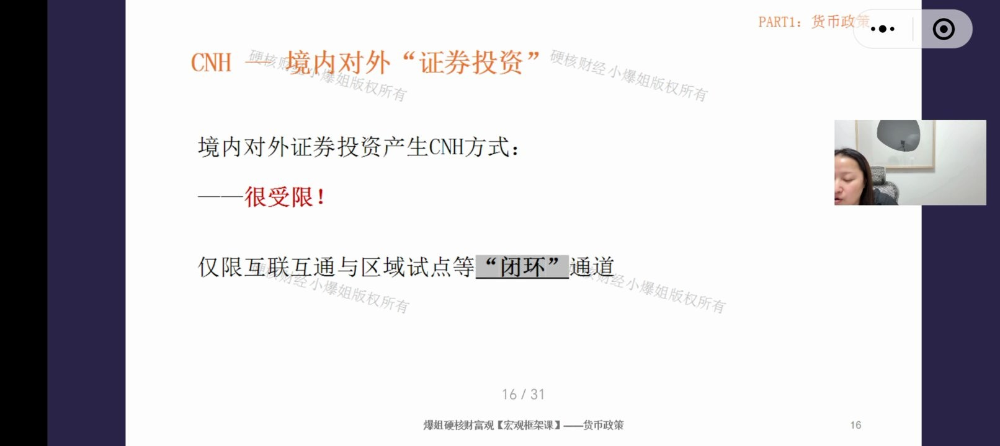
境内对外证券投资能不能产生离岸人民币？有，但非常非常受限。
目前允许人民币跨境证券投资的，仅限互联互通和区域试点等"闭环通道"：南向港股通、南向债券通、南向粤港澳理财通、内地香港基金互认等。其他方式基本不可以。
这说明了什么？我们更希望把离岸人民币、把人民币国际化用到实体经济里，而不是让它跑到金融投资领域"搞出境"。所以通过证券方式产生离岸人民币的使用场景非常谨慎，一定在可控的闭环通道内才允许。
这一点和全球很多国家不一样：比如日本是全球的融资货币，利率非常低，日本央行、险资等大量资金都投向美债等海外金融资产，它投的全是金融资产——但我们不行。
补充背景：全球每个国家基本都有在岸和离岸两个市场。别国不是外汇管制国，离岸和在岸是一套汇率；而我们是两套汇率（两个货币的现货市场）——这是与大多数国家一个很大的不同。
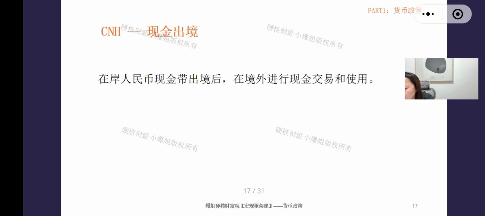
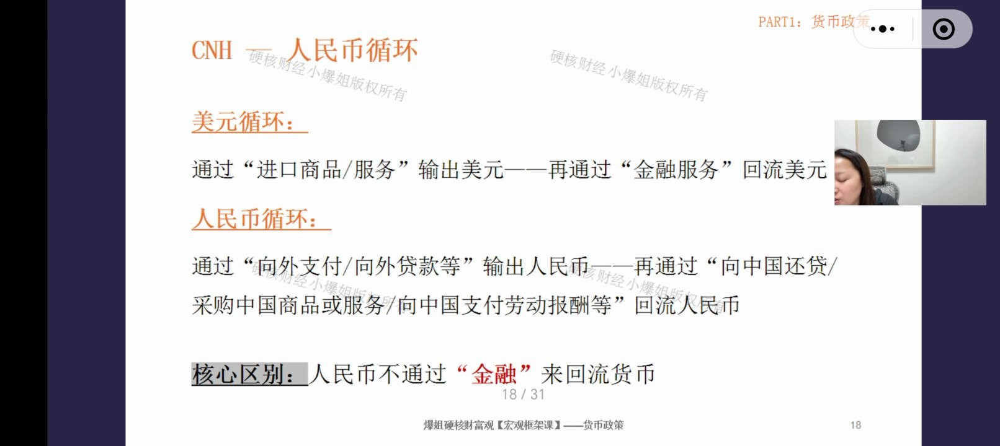
现金出境就是字面意思：在境内有现金，把它带出境，在境外交易或使用，就在海外流通、变成了离岸人民币。
美国是全球最大的贸易逆差国，向全世界买东西、输出美元；全世界收到美元后变成外汇储备；外汇储备放在手里不生息、没收益，于是各国又把外汇储备回流美国、投向美元资产（如美债）——美元循环完成。
中国是贸易顺差国，没法靠逆差输出货币。我们的做法是：通过向外支付或向外贷款，把在岸人民币输出为离岸人民币；再通过对方还贷款、买我们的货、买我们的服务、给我们付劳动报酬/工资等方式，实现人民币回流。
最大差别：人民币不是通过金融（中国的股票、债券市场）回流货币的；而美元是通过金融产品或金融服务回流的。这是本质上的巨大区别——美元是债务循环，人民币是实体循环。
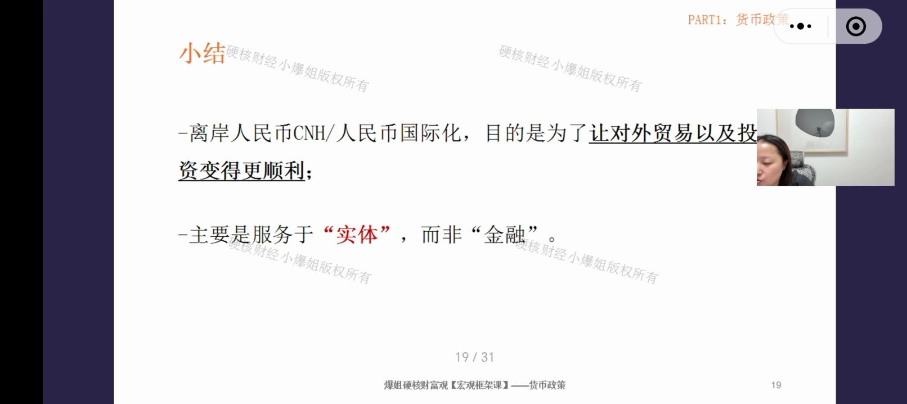
把离岸人民币的发行、使用、循环讲完了，重点拎一拎：
离岸人民币存在的意义、人民币国际化的意义，不是成为另一个霸权货币，而是让我们的对外贸易和投资变得更顺利，解决用美元的那么多痛点。它的目的主要是服务于实体，而不是金融——这一点一定要记在脑子里，不要记混。
上半场到此结束。下半场转入全球各国货币谁强谁弱的"看图说话"。
35:16 - 56:41 · 第20~31页PPT
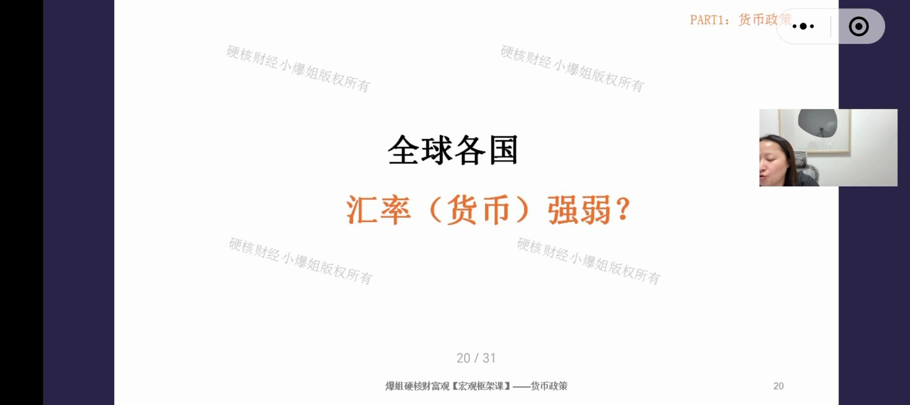
比较一国汇率的强弱，首先要搞清楚跟谁比。绝大多数人认为应该跟单一的美元比绝对值（比如 6.5、7.3、7.5 这个数字）。
这是不对的：美元本身就是全球最强的货币、全球霸权货币、主导货币，它自己加息降息就能让货币一会儿变强一会儿变弱，让全世界的货币围着它转。单纯跟它比绝对值没有意义。
正确的比法是跟"同行"比——除了美国以外的其他国家一起比：美元走强时，你是否贬得更少；美元走弱时，你是否升得更多。这样才比得出强弱。
核心标准：看这个货币比较于其他非美元货币对美元的走势，是更强还是更弱。这就是衡量货币强弱的正确框架。
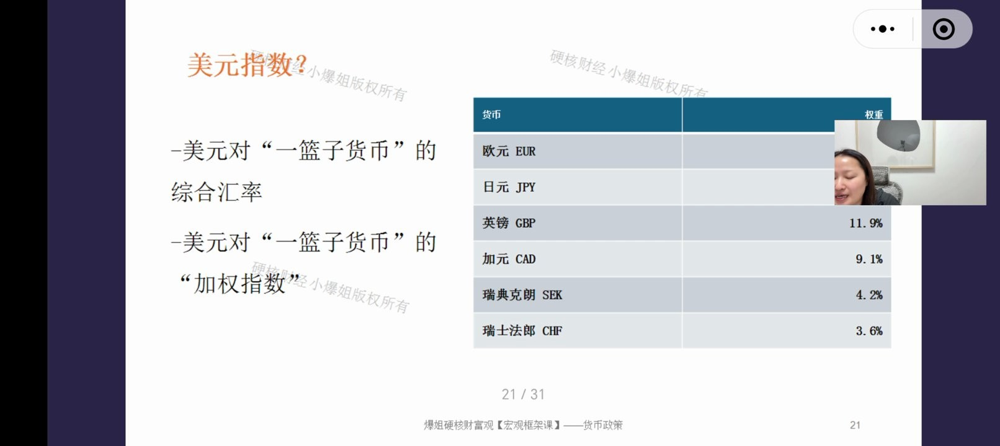
其他货币跟哪个指标比？就是美元指数。
定义：美元指数是美元对一篮子货币的综合汇率、加权指数。篮子里有六种发达经济体的货币，按固定权重构成：欧元、日元、英镑、加元、瑞典克朗、瑞士法郎。
接下来就逐个看：这些货币相对美元指数，25年到底谁跑赢、谁跑输。
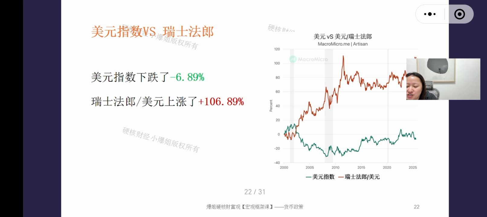
时间跨度：2000年到2025年8月，25年。数据对比：
两个数字一比较，瑞士法郎非常强。原因主要有两个：
补充：瑞士央行并不愿意让瑞郎升值这么快（升值快出口有压力），所以长期维持低利率并做了大规模的汇率干预。否则今天的瑞郎绝不止升值100%出头，"可能就飞上天了"。
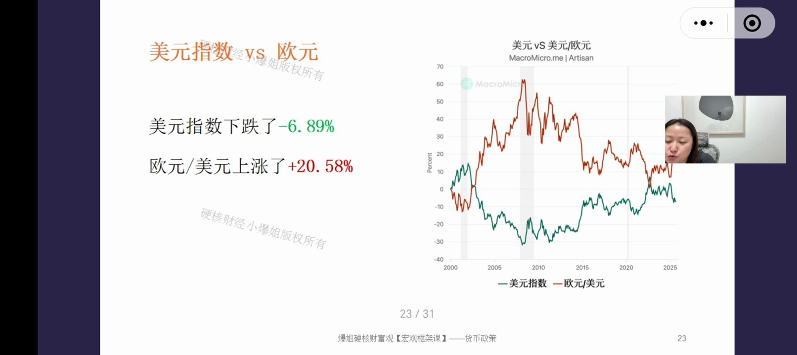
同样25年数据：
从图形上看，欧元（红线）与美元指数（绿线）呈现明显的对称结构——上面涨的部分就是下面跌的部分，形状非常相似，说明负相关性很高。
原因：欧元在美元指数中的权重最高，约占57%。一旦欧元大幅升值，反方向就是美元对欧元大幅贬值，美元指数就相应大幅走弱。所以欧元走强与美元指数走弱，本质上是同一件事的两面。
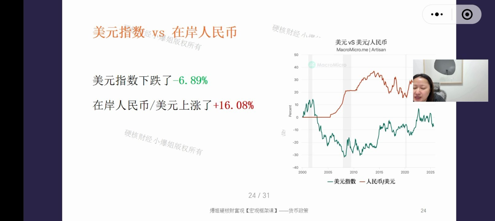
这个结果很多人没想到。2000—2025年的25年数据：
图形上有两个观察点：
打脸市场叙事：网上有言论说"人民币高估了、应该贬很多"，但25年的实际走势，人民币对美元指数明显更强。"人民币持续贬值/被高估"的市场叙事缺乏宏观证据。而且如果不是为了保出口，我们会升值得更厉害——毕竟有这么大的顺差摆着。
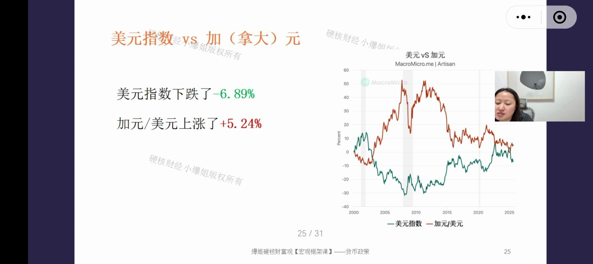
同样2000—2025年：
图形上，上面两个图基本是镜像结构，波动长得很像、像反过来似的。这说明：
加元是非常典型的美元"仆从货币"——跟着美元走的货币，没什么特别可说的。
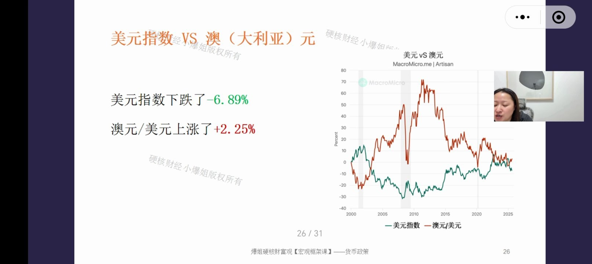
25年数据：
图形上红绿两条线也是负相关，但波动率不一样，没那么对称。核心原因：
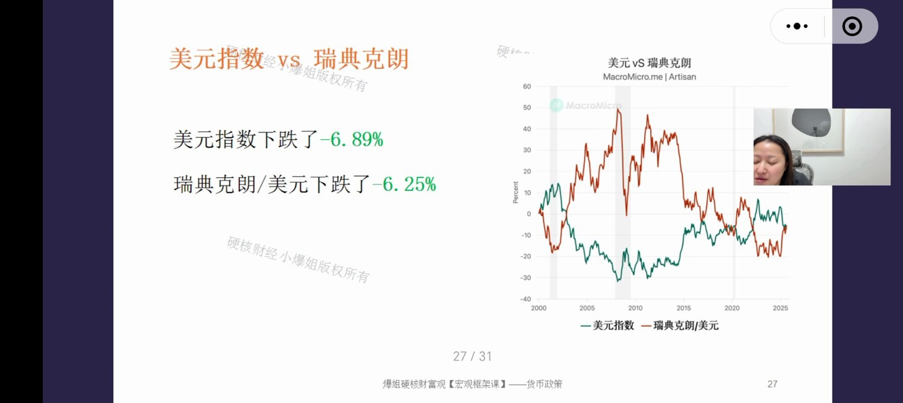
同样25年：
没什么特别可分析的。瑞典克朗当年能编入美元指数，是因为那个时代它比较强——当时被称为"小德国"，商品质量等各方面都比较强。但到现在，瑞典在全球基本是"小透明"，尤其在货币领域基本没什么声浪了。
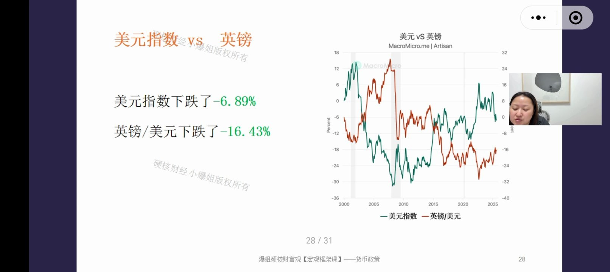
25年数据：
曾经的日不落帝国，现在真的变成"日在落"帝国了：在美元指数下跌的背景下，英镑不涨反跌，跌得比美元指数还狠，趋势一路不太行。
关于原因：每一个货币单独讲原因都能讲两三个小时（汇率问题牵扯历史原因、经济基本面、货币政策、汇率管理方式等），这节课不展开，记住结论即可：英镑现在走得比较弱。
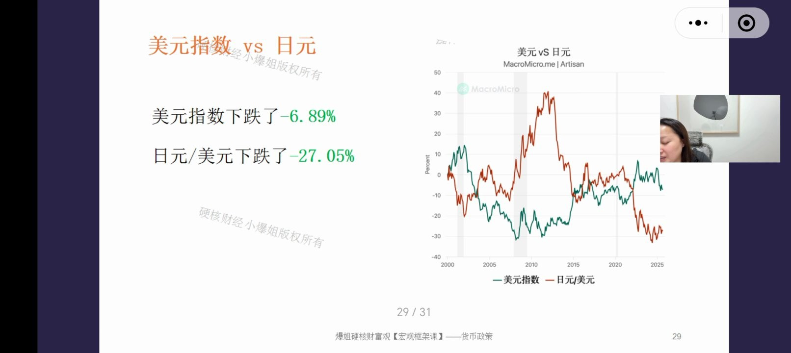
日元是大家很关心的货币。25年数据：
结论：日元属于"假"避险货币，实为套利 + 高波动的融资货币。数据不会骗人——25年间它比美元指数跑得还差。如果你真是避险货币，怎么都要跑赢美元才对，否则避什么险呢？
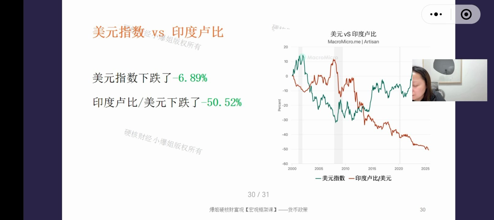
最后一个：
没有什么可形容的，只能说一泻千里——印度卢比对美元存在长期贬值趋势。原因：
每个国家都有自己的汇率管理方式，印度这种模式决定了它长期贬值的路径。
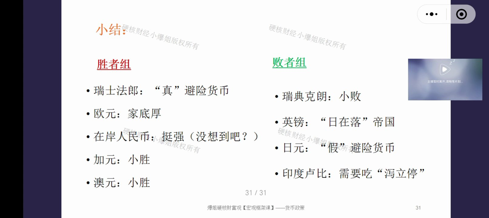
所有货币强弱分析完毕。每个货币为什么走强、走弱的具体原因不需要掌握（一个汇率问题牵扯历史、基本面、货币政策、管理方式等维度，一个国就能讲两小时），但对比后的结果要掌握——这能帮你在判断一个国家货币（如日元、人民币）强弱、识别"真避险还是假避险"、了解一国未来资产时心里有数。
两个市场叙事的修正：① 很多人吹"印度是下一个中国"，但从汇率就能看出差距不是一星半点；② 财经自媒体讲的多是情绪、没依据，做判断要看数据、看理性分析。看完全球各国汇率，你对哪些国家经济相对强、哪些更多是神话，就有了基本判断。
本期是汇率系列第三讲，核心收获：
第一，人民币国际化的真实目的，不是成为另一个美元霸权，而是解决使用美元在外贸中的四大痛点（汇率风险、合规制裁风险、交易时间成本、融资可得性），让贸易和投资更顺利，服务实体而非金融。
第二，离岸人民币不是央行"发行"的，而是由在岸人民币通过六条渠道"转化"到境外：境内对外支付、境内对外贷款、央行货币互换、境内对外直接投资、严格受限的证券投资（仅互联互通闭环通道）、现金出境。境外企业拿不到人民币时，可层层递进地找中国银行、所在国银行、所在国央行（通过中国央行）借。
第三，人民币循环与美元循环本质不同：美元是"贸易逆差输出→美债回流"的债务循环（回流=借钱），人民币是"借出/支付→实体收益回流"的实体循环（回流=把自己借出去的钱收回来），人民币不通过金融回流。美元换来更高国际接受度与流动性但债务需持续扩张；人民币背后是实体资产与贸易顺差，对债务扩张依赖弱，但国际接受度提升较慢。
第四，判断货币强弱不能用"对美元绝对汇率"，而要以美元指数（对欧元、日元、英镑、加元、瑞典克朗、瑞士法郎六种发达经济体货币的加权指数）为锚，看谁在美元走强时贬得少、走弱时涨得多。
第五，25年长周期复盘：胜者组——瑞郎最强（真避险）、欧元（+20.58%，权重57%与美元指数高度负相关）、在岸人民币（+16.08%，811汇改后市场化窗口、贸易顺差支撑）、加元（+5.24%，美元仆从货币）、澳元（+2.25%，商品周期）；败者组——瑞典克朗（-6.25%）、英镑（-16.43%，日不落→日在落）、日元（-27.05%，假避险真融资货币）、印度卢比（-50.52%，一泻千里）。人民币"高估"叙事缺乏宏观证据。
第六，下节课是汇率系列的最后一节：讲汇率对各类资产的影响和汇率常用的衍生品工具。货币政策三大块（货币、利率、汇率）各约四节课，讲完后会穿插一期货币政策总结课，再进入经济周期、美林时钟等主题。货币政策内容一定要反复看。
以下为课程配套的专业版知识卡片，标题为"货币政策第10期：汇率（3）——离岸人民币循环机制与全球主要货币强弱比较"，汇总了本期核心知识点的完整框架。

以下为极简版知识卡片（副标题：人民币出海记与全球货币"比武大会"），用问答形式快速回顾核心概念。
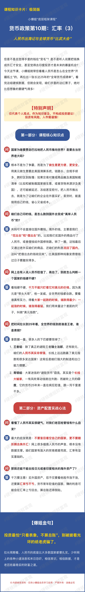